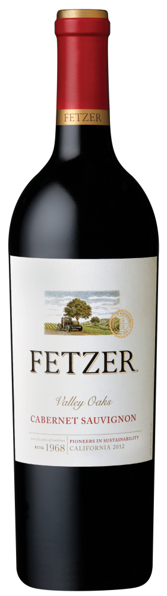

FETZER
Описание товра
Вино Cabernet Sauvignon Valley Oaks,
0.75 л.,
2016 г.
Характеристики товара
- Красное
- Сухое
- США
Подробное описание товара
красное — фруктовое, среднетелое, с частичной выдержкой в дубе
История Бренда
Fetzer — это полувековая история и титул первого и главного защитника окружающей среды Калифорнии.
Лесоруб Бернард Фетцер всю жизнь мечтал о собственном ранчо и в 1954 году вместе с женой и 11 детьми он продал долю в орегонской лесопилке и отправился в Калифорнию. В Мендонсино его
привлекли кедры, сосны и виноградники. В 1968 Фетцеры произвели свое первое вино. В 90-х началась эпоха природосообразного виноградарства. Первые солнечные панели, переработка отходов, сокращение потребления воды.
В 1993 — первая награда за вклад в сохранение окружающей среды. В 1999 компания стала первой винодельней Калифорнии, полностью перешедшей на возобновляемую энергию. В 2007 Fetzer вошло в топ
хозяйств
с лучшим соотношением цены и качества по версии Wine & Spirits. C 2015 года консультантом хозяйства становится Пол Хоббс.